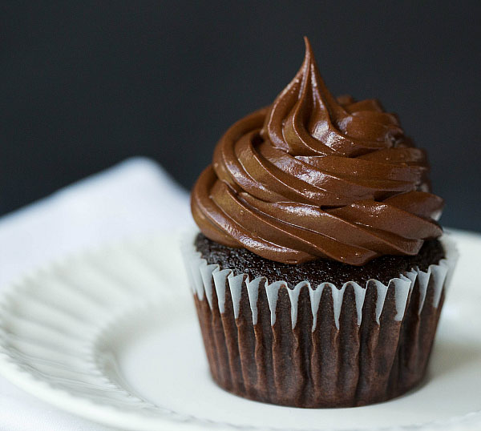

Ingredients
- 1 1/3 cups all-purpose flour
- 1/4 teaspoon baking soda
- 2 teaspoons baking powder
- 3/4 cup unsweetened cocoa powder
- 1/8 teaspoon salt
- 3 tablespoons butter, softened
- 1 teaspoon baking soda
- 1 1/2 cups white sugar
- 2 eggs
- 3/4 teaspoon vanilla extract
- 1 cup milk
Directions
- Preheat oven to 350 degrees F (175 degrees C).
- Line a muffin pan with paper or foil liners.
- Stir together the flour, baking powder, baking soda, cocoa and salt. Set aside.
- In a large bowl, cream together the butter and sugar until light and fluffy.
- Add the eggs one at a time, beating well with each addition, then stir in the vanilla.
- Add the flour mixture alternately with the milk; beat well.
- Fill the muffin cups 3/4 full.
- Bake for 15 to 17 minutes in the preheated oven, or until a toothpick inserted into the cake comes out clean.
- Frost with frosting when cool.
Frosting
- 1/2 cup butter
- 3 (1 ounce) squares unsweetened chocolate
- 1 pound confectioners' sugar
- 1/2 teaspoon vanilla extract
- 3/4 cup milk
Directions
- Melt chocolate and butter in the microwave, or in the top of a double boiler.
- In a large bowl, combine confectioners' sugar, vanilla and 1/2 cup of the milk.
- Blend in the melted chocolate mixture. Add remaining milk, a little at a time, until desired consistency is achieved.